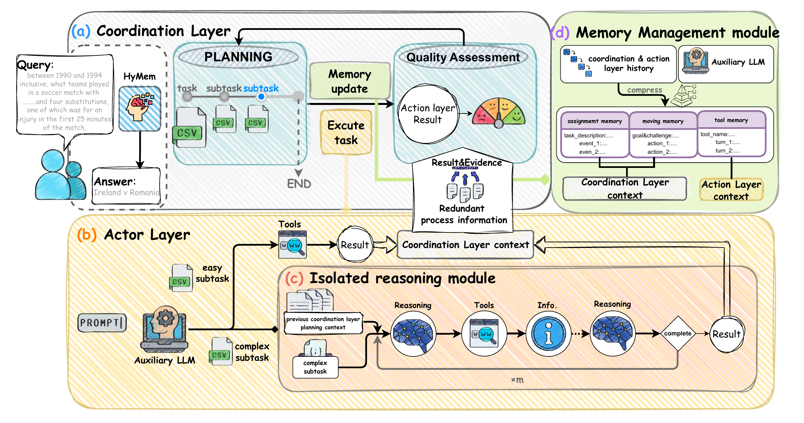
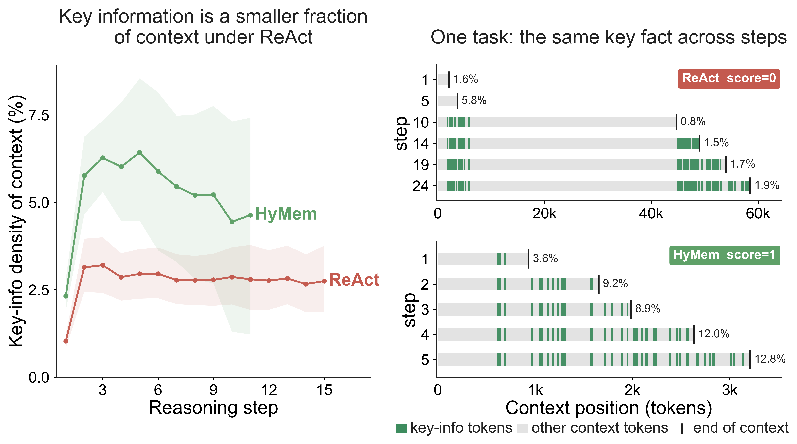
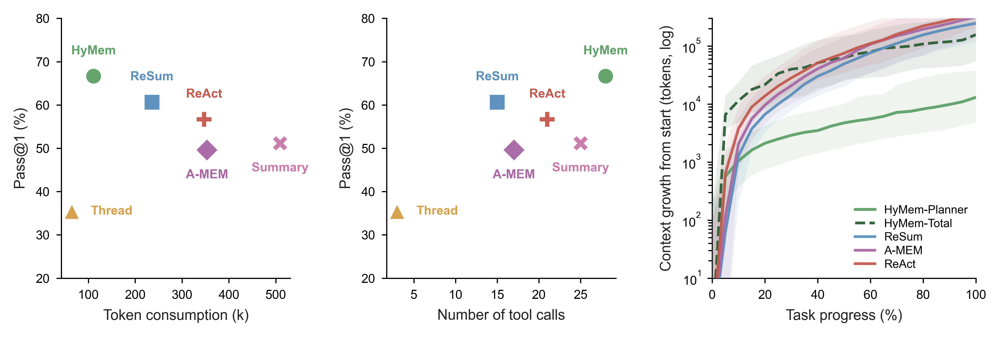
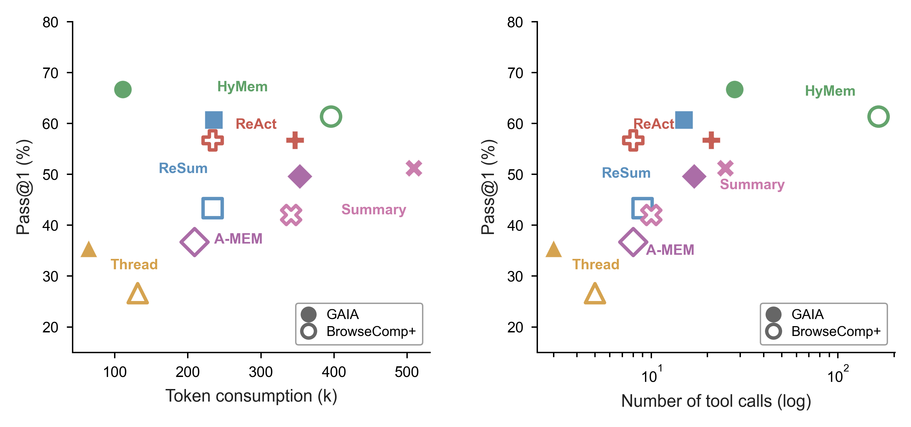

交互演示一：上下文隔离过程对比（ReAct vs HyMem）
点击下方任务进度节点，观察同一复杂多跳检索任务中，单上下文 ReAct 与分层隔离 HyMem 在主上下文长度、关键事实密度和信息流上的差异（数据来自 GAIA 真实轨迹统计）。
选择任务推进阶段：
ReAct（扁平单上下文）
Step 1 · 1.6% 关键信息
上下文长度：2.1k tokens
状态：进行中
HyMem（分层上下文隔离）
Step 1 · 3.6% 关键信息
规划层上下文：0.9k tokens
状态：进行中
交互演示二：多基线准确率与成本对比
切换数据集查看 HyMem 与 ReSum、ReAct、Summary、A-Mem、Thread 五类上下文/记忆管理方法的实测结果（源自仓库 docs/stats/）。
对比指标：Pass@1（越高越好）与单任务中位 Token 消耗
架构与核心实验图表
点击任意图表可放大查看原始清晰图。




BibTeX 引用
@article{wang2026hymem,
title = {HyMem: Hierarchical Context Management for Long-Horizon Agents via Information Isolation},
author = {Wang, Xinqi and others},
journal = {arXiv preprint arXiv:2608.15703},
year = {2026}
}